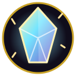

Осколки
Кристалла Маны
Тёмное фэнтези · Магия · RPG
Тысячу лет Кристалл Маны хранил равновесие мира.
Но однажды ночью он раскололся на три осколка —
и тьма заполнила землю.
Деревня Аврора — последний оплот света.
Старейшина Эдвин верит, что кто-то сможет собрать осколки.
Кто-то достаточно смелый. Или достаточно безумный.
Соберите три осколка Кристалла Маны. Победите мини-боссов в Тёмном лесу, Руинах и Пещере теней. После сбора всех осколков откроется эндгейм — Бесконечный Разлом и режим NG+.
⚔️ Воин — не знает заклинаний, но копит Ярость от ударов и полученного урона. Тратит её на мощные способности.
🧙 Маг — слаб физически (урон от оружия вдвое ниже), но его заклинания сокрушительны. Полностью зависит от маны.
🏹 Лучник — ловкий боец дальнего боя с высоким шансом уклонения и критического удара. Накапливает Концентрацию обычными атаками, использует ядовитые стрелы и способности «Прицельный выстрел», «Уклонение» и «Отравленный наконечник».
Каждый класс — свой путь через тьму
WASD / стрелки — движение · Пробел / 1 — атака · 2 — магия · 3 — предмет · 4 — побег · 5 — блок · 6 — способность · Esc — выход
Тьма оказалась сильнее. Но смерть — это ещё не конец пути.
Возродитесь в деревне с половиной здоровья и маны.
Вы собрали все три осколка Кристалла Маны и восстановили его. Свет вернулся в мир, тьма отступила.
Вы — истинный герой!